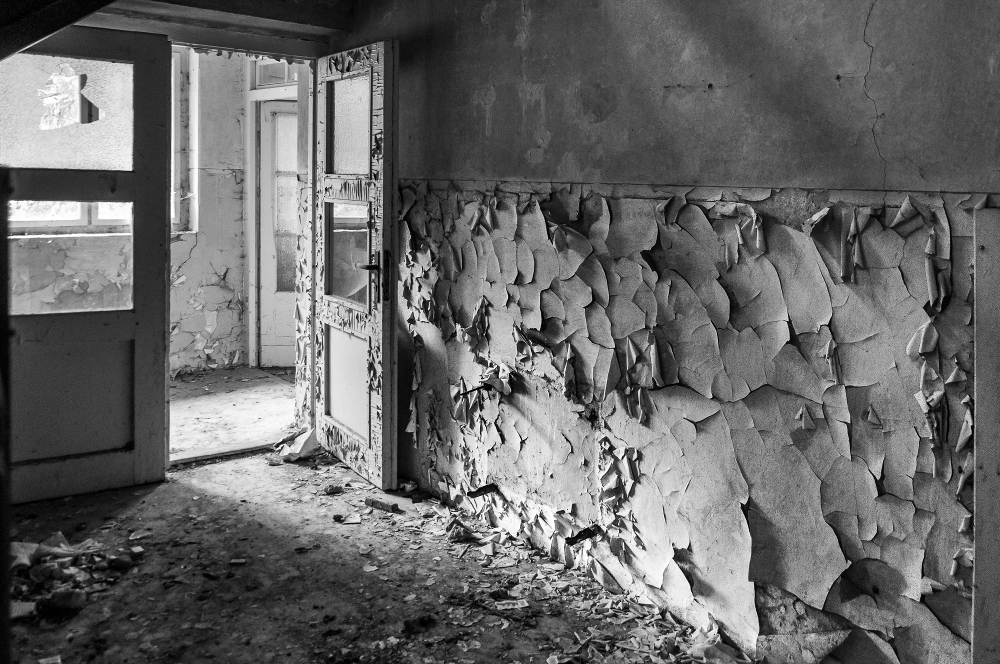
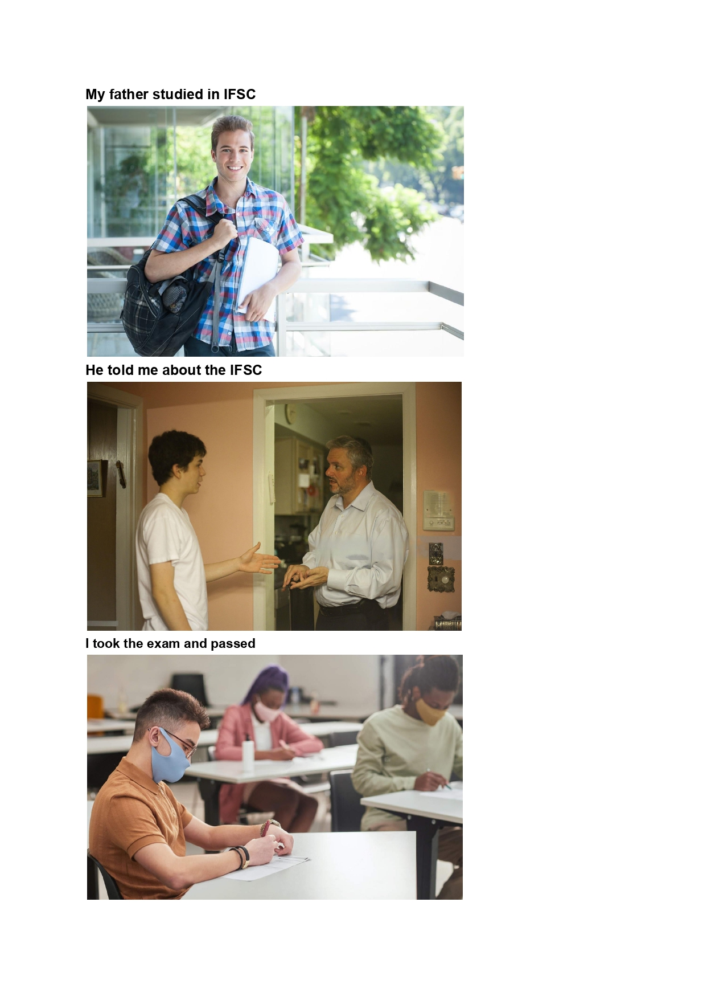

Apresentação
Já que não conseguimos preencher o livro durante a aula, tive essa ideia pra não deixar o livro em branco. Coloquei aqui os 3 trabalho que eu achei.
The first chapter of my autobiography
I was born in Brazil in November, 2007. I was 20 inches long and 7.7 pounds, and I looked like a king. I sI was born in Brazil in November 2007, measuring 20 inches in length and weighing 7.7 pounds. As an infant, I had a regal appearance. During my early months, I spent a significant amount of time crying and eating until I reached the age of four months when I began to crawl. Even from a young age, I displayed a talent for writing and reading, although I never developed a taste for bananas. When I turned ten, my interest in music grew, but at fourteen, I shifted my focus to football. As a child, I was brave enough to swim, yet terrified of ghosts. Even to this day, I avoid roller coasters due to my fear. My closest childhood friend was Antonio, who currently works as a student at Dom Bosco. My most cherished possession during that time was a toy car. One of my most memorable birthdays was my fifteenth when my family gifted me with a new set of luggage for travel. My favorite TV show was "Backyardigans," and when I wasn't watching television, I would often sleep for hours at a time. Throughout my childhood, everyone constantly told me that I would one day grow up to become a doctor.
The worst nightmare of my life
My name is Vinicius, and that was the worst nightmare of my life. I was in an abandoned city, where frightening shadows chased me through the empty streets. Strange whispers echoed through the air as I tried to escape. My legs shook, and the feeling of fear overwhelmed me. I heard strange laughter around me, which increased my fear. Darkness and cold enveloped me, taking away my courage. It was a nightmare that left me scared and breathless even after waking up.
Tópico 4
Texto do tópico 4...
